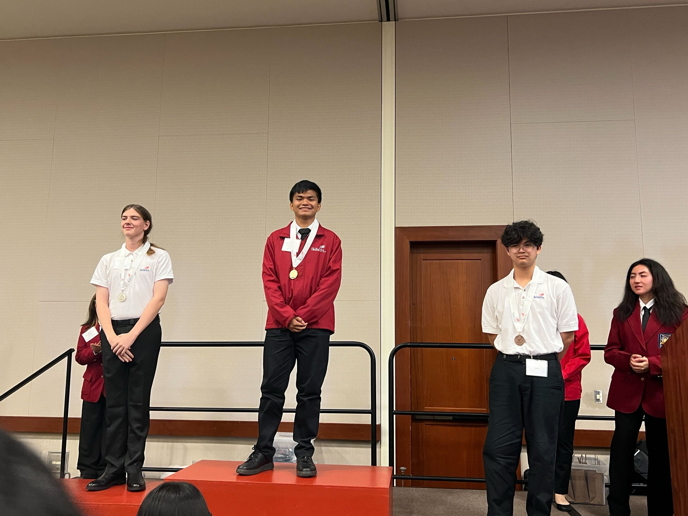

Waipahu High School Math Team
Grades Participated: 9-12
The WHS Math Team is a group of students that learn and study about various different subjects in mathematics. They face off in competitions with math teams from other schools, where they are asked to answer challenging questions on a strict time limit. Students can enhance their understanding and knowledge of math concepts, including higher levels of mathematics than the grade the student is at.

Waipahu High School Japanese Club
Grades Participated: 10, 11
The WHS Japanese Club is for students to engage with the Japanese culture. Club meetings are usually bonding activities that relate to Japan in different ways, including interacting with foreign exchange students coming from Japan. There are many opportunities to do community service, helping out organizations such as Hawaii's Plantation Village and the Japanese Cultural Center of Hawai'i.

National Technical Honor Society
Grades Participated: 11-12
NTHS is an international honor society that is specifically for students pursuing a skilled craft or technical occupation in the workforce.

SkillsUSA
Grades Participated: 11-12
SkillsUSA is a creer and technical student organization for students in trade and skilled service occupations. Each year, SkillsUSA participates in the Hawaii State CTSO Conference, where organizations from different schools throughout the state compete in categories such as architecture, filmmaking, mathematics, drones, and more. In the 2025 Hawaii State CTSO, I won 1st place in the Computer Programming competition, and in June I will be flying out to Atlanta, Georgia to represent my school and state in the SkillsUSA National Leadership Skills Conference.

Waipahu High School Color Guard
Grades Participated: 11-12
Color Guard is a performing arts where people dance and spin flags and weapons as a visual representation to a piece of music. The Color Guard participates in various performances and competitions hosted by different schools, usually with the Marching Band during football season. Technique and visual expression are of utmost importance, and the multiple practices each week are physically intensive.

Japanese Wizards Competition
Grades Participated: 11
Japanese Wizards is competition where teams compete with each other about their knowledge of Japan and Japanese culture. The competition tests knowlegde on various subjects, such as pop culture, politics, history, and language.

National Honor Society
Grades Participated: 12
National Honor Society is one of the most recognized student organizations in the United States. The organization puts an emphasis on recognizing accomplished students and promoting characteristics of scholarship, leadership, character, and service.